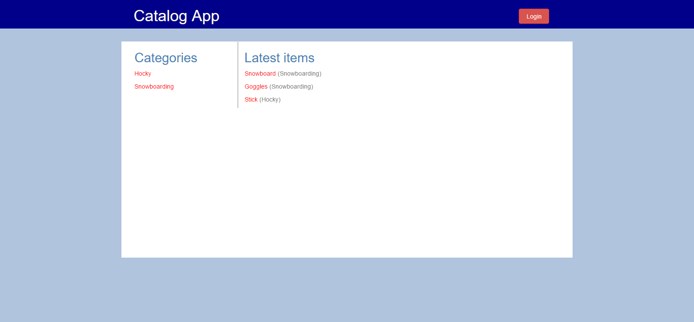

Neighborhood Map
이 프로젝트는 신촌 주변 지역의 몇 군데 맛집을 보여주는 웹 앱입니다. 구글 맵 API, 구글 스트리트 뷰, Foursquare API를 사용하여 구현하였으며 Knockout JS를 이용하여 동적 웹 UI를 구현하였습니다.
2016년 11월
Google Map API AJAX Knockout JS JQuery

Item Catalog
이 프로젝트에서는 파이썬 플라스크를 사용하여 품목을 추가하거나 제거할 수 있는 기능을 가진 RESTful한 웹 앱를 구현하였습니다. 구글 플러스와 페이스북을 통해서 본인 인증을 하고 및 권한을 부여하는 기능도 구현하였습니다.
2016년 12월
Python Flask third-party Oauth authentication
Multi User Blog
이 프로젝트에서는 가입, 로그인하여 글을 작성하고 수정하며 댓글을 달 수 있는 블로그를 구현하였습니다. Google data store를 사용하였고 구글 앱 앤진을 사용하여 배포하였습니다.
2016년 11월
Google NDB datastore Jinja(Python templating language)